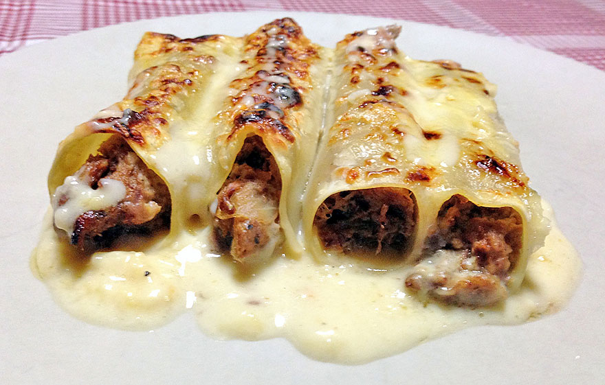
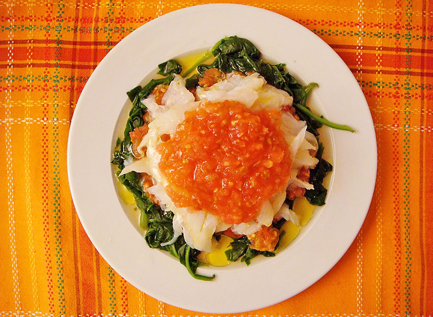
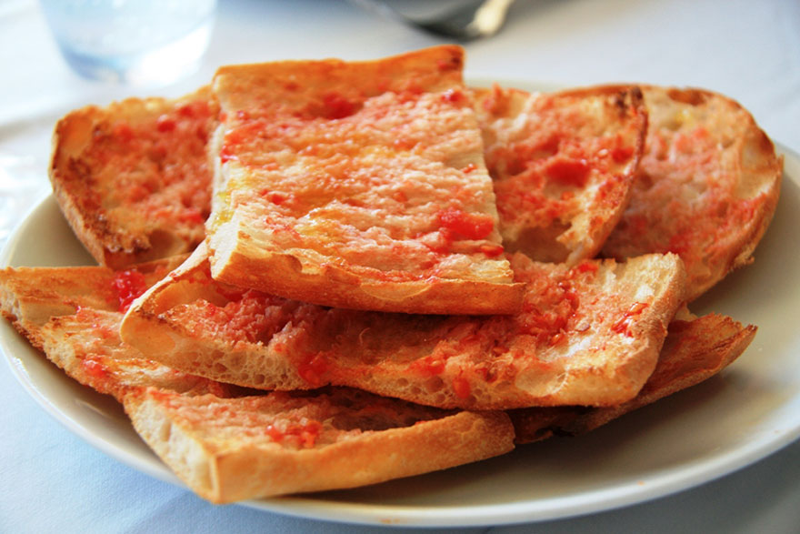

When visiting Barcelona, one of the highlights is the food. Not only Catalonia is a beautiful region but also boasts some of the best gourmet delicacies in Spain. Typical food in Barcelona is quite different from what you might have in mind if you have tried traditional dishes in other parts of the country. If you want to, not only see the sites, but also try the local dishes, I have prepared a comprehensive list of the most traditional food in Barcelona. Put your bib on and bon profit!
Canelons

Adopted by the people here, cannelloni is considered a typical Barcelona dish. It tends to have stewed meat inside the tubes rather than the Italian minced meat. That is why it is traditional to eat them on December 26th using the left overs from Christmas dinner. The cannelloni are always also topped with a béchamel sauce (very little, if any, tomato sauce is used). There are different variations and Canelons d’ànec (duck cannelloni) are my all time favourite.
Esqueixada de Bacallà

The main ingredient in this dish is cod (bacallà), a widely eaten fish here in Catalonia. In this case the salted cod has been shredded to get the proper consistency. Add to it some chopped tomatoes, red peppers and onions plus black olives and a healthy drop of olive oil and, voilà, you have an amazing summer dish. A very refreshing gluten-free dish for those hot summer days in Barcelona.
Pa amb Tomàquet

It consists of toasted Catalan country bread scraped with garlic (optional) and lightly coated with of the flesh of fresh tomatoes. The final touch is always a drizzle of olive oil and a pinch of sea salt on top. Usually, it is eaten as an accompaniment to a meal or, more commonly, as a base to sample the traditional cured meats. However, it is so delicious that it can even be a starter in itself.